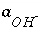
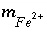
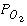
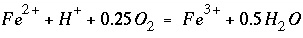
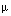

Kinetic rate expressions can be defined in a completely general way in PHREEQC using Basic statements in the RATES data block. The rate expressions can be used in batch-reaction or transport calculations by using the KINETICS data block. For transport calculations ( ADVECTION or TRANSPORT), kinetic reactions can be defined cell by cell by the number range following the KINETICS keyword ( KINETICS m-n ). The rate expressions are integrated with an embedded 4th- and 5th-order Runge-Kutta-Fehlberg algorithm. Equilibrium is calculated before a kinetic calculation is initiated and again when a kinetic reaction increment is added. Equilibrium is calculated for all solution-species, and for all exchange, equilibrium-phase, solid-solutions, surface assemblages and gas phases that have been defined. A check is performed to ensure that the difference between the 4th- and 5th-order estimates of the integrated rate over a time interval does not vary by more than a user-defined tolerance. If the tolerance is not satisfied, then the integration over the time interval is automatically restarted with a smaller time interval.
Kinetic reactions between solids and the aqueous phase can be calculated without any modification of the database. PHREEQC can also calculate kinetic reactions among aqueous species that are normally assumed to be in equilibrium, but this requires that the database be redefined. Aqueous species that react kinetically must be defined essentially as separate elements with SOLUTION_MASTER_SPECIES. This example illustrates the procedure for decoupling two valence states of an element (iron) and shows how PHREEQC can be used to calculate the kinetic oxidation of Fe 2+ to Fe 3+ in water.
The rate of oxidation of Fe 2+ by O 2 in water is given by (Singer and Stumm, 1970):
where t is time in seconds,  is the activity of the hydroxyl ion,  is the total molality of ferrous iron in solution, and  is the oxygen partial pressure (atm).
The time for complete oxidation of ferrous iron is a matter of minutes in an aerated solution when pH is above 7.0. However, Fe 3+ forms solute complexes with OH - and it may also precipitate as iron oxyhydroxides, so that pH decreases during oxidation. Because the rate has quadratic dependence on the activity of OH - , the oxidation rate rapidly diminishes as pH decreases. The rate equation is highly non-linear in an unbuffered solution and must be integrated numerically. This example models a reaction vessel with 10 mmol NaCl / kgw and 0.1 mmol FeCl 2 / kgw at pH = 7.0 through which air is bubbled; the change in solution composition over time is calculated.
The calculation requires the uncoupling of equilibrium among the Fe(2) and Fe(3) species. Two new "elements" are defined in SOLUTION_MASTER_SPECIES--"Fe_di", which corresponds to Fe(2), and "Fe_tri", which corresponds to Fe(3). The master species for these elements are defined to be Fe_di+2 and Fe_tri+3, and all solution species, phases, exchange species, and surface species must be rewritten using these new elements and master species. A few of the transcriptions are shown in table 28, which gives the partial input file for this example.
Table 28. --Partial input data set for example 9
TITLE Example 9.--Kinetically controlled oxidation of ferrous
iron. Decoupled valence states of iron.
SOLUTION_MASTER_SPECIES
Fe_di Fe_di+2 0.0 Fe_di 55.847
Fe_tri Fe_tri+3 0.0 Fe_tri 55.847
SOLUTION_SPECIES
Fe_di+2 = Fe_di+2
log_k 0.0
Fe_tri+3 = Fe_tri+3
log_k 0.0
#
# Fe+2 species
#
Fe_di+2 + H2O = Fe_diOH+ + H+
log_k -9.5
delta_h 13.20 kcal
#
#... and also other Fe+2 species
#
#
# Fe+3 species
#
Fe_tri+3 + H2O = Fe_triOH+2 + H+
log_k -2.19
delta_h 10.4 kcal
#
#... and also other Fe+3 species
#
PHASES
Goethite
Fe_triOOH + 3 H+ = Fe_tri+3 + 2 H2O
log_k -1.0
END
SOLUTION 1
pH 7.0
pe 10.0 O2(g) -0.67
Fe_di 0.1
Na 10.
Cl 10. charge
EQUILIBRIUM_PHASES 1
O2(g) -0.67
RATES
Fe_di_ox
-start
10 Fe_di = TOT("Fe_di")
20 if (Fe_di <= 0) then goto 200
30 p_o2 = 10^(SI("O2(g)"))
40 moles = (2.91e-9 + 1.33e12 * (ACT("OH-"))^2 * p_o2) * Fe_di * TIME
200 SAVE moles
-end
KINETICS 1
Fe_di_ox
-formula Fe_di -1.0 Fe_tri 1.0
-steps 100 400 3100 10800 21600 5.04e4 8.64e4 1.728e5 1.728e5 1.728e5 1.728e5
INCREMENTAL_REACTIONS true
SELECTED_OUTPUT
-file ex9.sel
-reset false
USER_PUNCH
-headings Days Fe(2) Fe(3) pH si_goethite
10 PUNCH SIM_TIME/3600/24 TOT("Fe_di")*1e6, TOT("Fe_tri")*1e6, -LA("H+"), SI("Goethite")
END
The SOLUTION data block defines a sodium chloride solution that has 0.1 mmol/kgw ferrous iron (Fe_di) and is in equilibrium with atmospheric oxygen. The EQUILIBRIUM_PHASES phases data block specifies that all batch-reaction solutions will also be in equilibrium with atmospheric oxygen; thus, there is a continuous supply of oxygen for oxidation of ferrous iron.
In the RATES data block, the rate expression is designated with the name "Fe_di_ox", and defined according to equation 159. Note the use of the special Basic function "TOT" to obtain the total concentration (molality) of ferrous iron (line 10), "SI" to obtain the saturation index, or, in the case of a gas, the log of the gas partial pressure (oxygen, line 30), and "ACT" to obtain the activity of OH - (line 40). Line 40 defines the moles of reaction. Notice also that the variable moles is calculated by multiplying the rate times the current time interval (TIME) and that the rate definition ends with a SAVE statement. The SAVE and TIME statements must be included in a rate definition; they specify the moles that reacted over the time (sub-)interval.
In the KINETICS data block, the rate expression named "Fe_di_ox" is invoked and parameters are defined. When the rate name in the KINETICS data block is identical to a mineral name that is defined under PHASES, the stoichiometry of that mineral will be used in the reaction. However, no mineral is associated with the rate name of this example, and the identifier -formula must be used to specify the reaction stoichiometry. The reaction involves loss of Fe_di [equivalent to Fe(2)] from solution as indicated by the stoichiometric coefficients of -1.0. The loss is balanced by a gain in solution of Fe_tri [equivalent to Fe(3)] with a stoichiometric coefficient of +1.0. Note that the formula only contains the elements for which the mass changes in the system. Thus, the overall kinetic reaction of the example is  , but the reaction of protons and oxygen to form water does not change the total mass of hydrogen or oxygen in the system. Hydrogen and oxygen are therefore not included in the formula. In the example, oxygen is replenished by equilibrium with atmospheric O2(g), and a mole transfer of oxygen does occur from the phase O2(g) in EQUILIBRIUM_PHASES into the solution. In a system closed to oxygen, the dissolved oxygen would be partly consumed.
The identifier -steps in the KINETICS data block gives the time step(s) over which the kinetic reactions must be integrated. When INCREMENTAL_REACTIONS true is used, each time step increments the total time to be simulated and the results from the previous time step are used as the starting point for the current time step.
The SELECTED_OUTPUT data block specifies the file name of the selected-output file and eliminates all default printing to that file ( -reset false). The only output to the selected-output file in this example is defined with the USER_PUNCH data block. The Basic program in USER_PUNCH specifies that the following be printed after each kinetic time step ( -steps defines 11 kinetic time steps): the cumulative time of the simulation, in days; the total ferrous and ferric iron, in  mol/kgw; the pH; and the saturation index of goethite.
When the input file is run, two warning messages are generated during the integration. If the integration time interval is too large, it is possible that the initial estimates of kinetic reaction increments produce negative solution concentrations. When this happens, the program prints a warning message, decreases the size of the time interval, and restarts the integration. The messages are warnings, not errors, and the program successfully completes the calculation. It is possible to eliminate the warning messages by reducing the initial integration interval. No warning messages are printed if the identifier -step_divide 100 is used ( KINETICS), which divides the initial (overall) time step by 100. Likewise, no warning messages are printed if the identifier -step_divide 1e-7 is used, which causes the reaction increment to be less than 1e-7 mol. The former approach, with -step_divide 100, is usually preferable because, although initial reaction increments are compelled to be small, later on in the integration large reaction increments are possible. Using -step_divide 1e-7 forces reaction increments to remain small throughout the entire integration, and in this example, the run time is about 5 times longer than using -step_divide 100, and about 10 times longer than when -step_divide is not used at all.
Figure 9. --Concentration of total Fe(2), total Fe(3), and pH as dissolved ferrous iron [Fe(2)] is kinetically oxidized to ferric iron [Fe(3)] by oxygen.
Figure 9 shows the concentration of total Fe(2), total Fe(3), and pH in the reaction vessel over the 10 days of the simulation. It can be seen that the pH rapidly decreases at the beginning of the reaction. The slope of Fe(2) against time is initially very steep, but lessens as the reaction progresses, which is consistent with equation 159. When the experiment is performed in reality in an unbuffered solution, it is noted that the pH initially rises. This rise in pH is consistent with slowly forming hydroxy-complexes of Fe(3). Because the oxidation reaction by itself consumes protons, the pH would initially rise if the hydroxy-complexes that lower the pH form slowly. Such kinetic formation of aqueous complexes could also be included in PHREEQC simulations, but it would require that the hydroxy-complexes of Fe(3) also be defined using a separate SOLUTION_MASTER_SPECIES and that a rate expression be defined for the kinetic formation of the complexes.